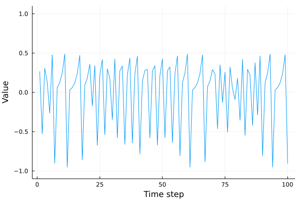
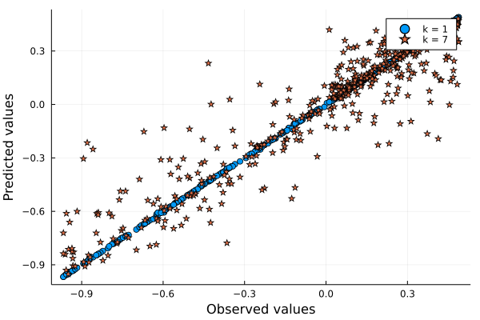
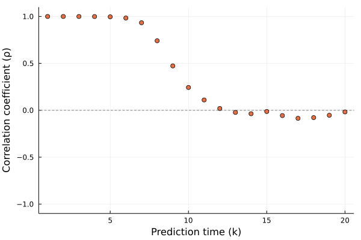
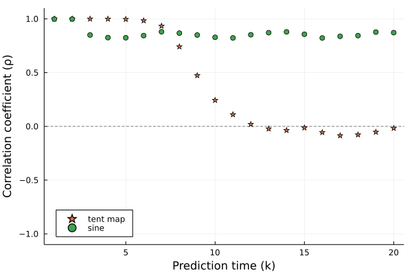
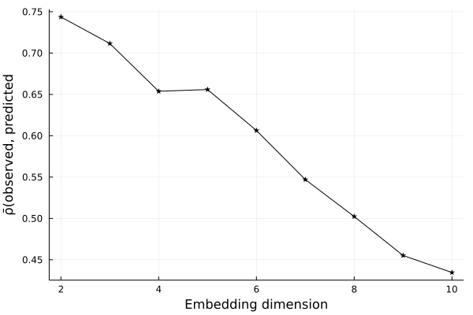
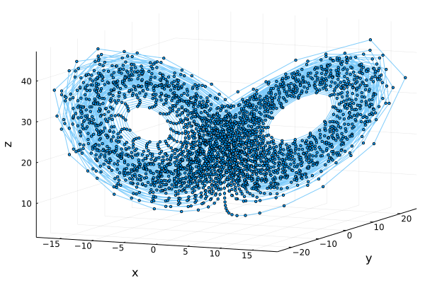
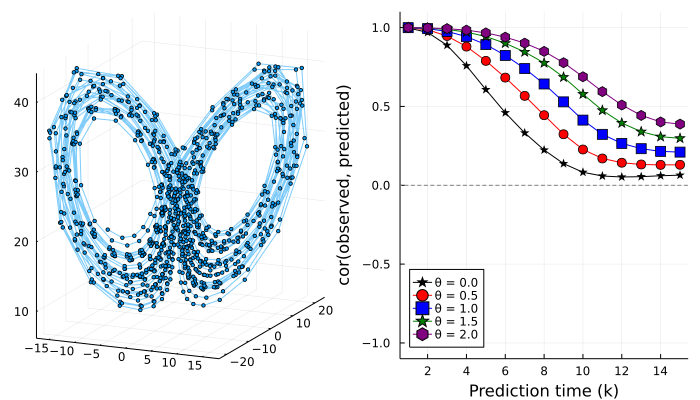

Empirical dynamical modelling
Simplex projection
CausalityTools.EmpiricalDynamicalModelling.simplex_predictions — Functionsimplex_predictions(x, k, [, correspondence_measure];
τ = 1, d = 2, p = 1,
training = 1:length(x) ÷ 2, prediction = length(x) ÷ 2 + 1:length(x)) → Vector{Float64}, Vector{Float64}From an embedding Mₓ computed from the time series x, first compute the the k-step forward simplex projections for each predictee in Mₓ[prediction]. This is done by locating, for each predictee, its d+1 nearest neighbors in Mₓ[training[1:end-p]], and projecting each neighbor p steps forward in time. Then, for each scalar value x[i] where i ∈ prediction, compute the prediction x̃[i] as an exponentially weighted average of the forward-projected neighbors (there are d+1 neighbors, so these form a simplex around the predictee).
If no third argument is given, then two vectors are returned: the observed values and the predicted values. If a correspondence_measure is given as the third argument, then return the correspondence between observed and predicted values.
Example
L = 2000
xs = 0.0:0.05:L
ts = sin.(xs) .+ rand(xs) ./ 0.2
# Compute the 3-step forward in time predictions and compute the correlation between
# observed and predicted values.
simplex_predictions(x, 1, Statistics.cor)Details
This is an implementation of the simplex projection method from Sugihara and May (1990)[Sugihara1990]. The original paper doesn not provide sufficiently detailed pseudocode for implementation, so the algorithm here is based on Ye et al. (2015)[Ye2015].
Example: reproducing Sugihara & May (1990)
The simplex projection method was introduced in Sugihara & May (1990). Let's try to reproduce their figure 1.
We start by defining the tent map and generating a time series for μ = 1.98.
using CausalityTools, DynamicalSystems, Plots, Statistics, Distributions; gr()
function eom_tentmap(dx, x, p, n)
x = x[1]
μ = p[1]
dx[1] = x < 0.5 ? μ*x : μ*(1 - x)
return
end
function tentmap(u₀ = rand(); μ = 1.98)
DiscreteDynamicalSystem(eom_tentmap, [u₀], [μ])
end
npts = 2000
sys = tentmap(μ = 1.98)
ts = diff(trajectory(sys, npts , Ttr = 1000)[:, 1])
p_ts = plot(xlabel = "Time step", ylabel = "Value", ylims = (-1.1, 1.1))
plot!(ts[1:100], label = "")
Next, let's compute the predicted and observed values for k = 1 and k = 7 using embedding dimension 3 and embedding lag 1. We'll use the first 1000 points as our training set, and try to predict the next 500 points.
d, τ = 3, 1
training = 1:1000
prediction = 1001:1500
x_1, x̃_1 = simplex_predictions(ts, 1, d = d, τ = τ, training = training, prediction = prediction)
x_7, x̃_7 = simplex_predictions(ts, 7, d = d, τ = τ, training = training, prediction = prediction)
p_obs_vs_pred = plot(xlabel = "Observed values", ylabel = "Predicted values")
scatter!(x_1, x̃_1, label = "k = 1", shape = :circle)
scatter!(x_7, x̃_7, label = "k = 7", shape = :star5)
There is high correlation between observed and predicted values when predicting only one time step (k = 1) into the future. As k increases, the performance drops off. Let's investigate this systematically.
kmax = 20
cors = zeros(kmax)
for k = 1:kmax
X, X̃ = simplex_predictions(ts, k, d = d, τ = τ, training = training, prediction = prediction)
cors[k] = cor(X, X̃)
end
plot(legend = :bottomleft, ylabel = "Correlation coefficient (ρ)",
xlabel = "Prediction time (k)",
ylims = (-1.1, 1.1))
hline!([0], ls = :dash, label = "", color = :grey)
scatter!(1:kmax, cors, label = "")
The correlation between observed and predicted values is near perfect until k = 3, and then rapidly drops off as k increases. At k = 8, there is virtually no correlation between observed and predicted values. This means that, for this particular system, for this particular choice of embedding and choice of training/prediction sets, the predictability of the system is limited to about 4 or 5 time steps into the future (if you want good predictions).
The main point of Sugihara & May's paper was that this drop-off of prediction accuracy with k is characteristic of chaotic systems, and can be used to distinguish chaos from regular behaviour in time series.
Let's demonstrate this by also investigating how the correlation between observed and predicted values behaves as a function of k for a regular, non-chaotic time series. We'll use a sine wave with additive noise.
𝒩 = Uniform(-0.5, 0.5)
xs = 0.0:1.0:2000.0
r = sin.(0.5 .* xs) .+ rand(𝒩, length(xs))
plot(r[1:200])
cors_sine = zeros(kmax)
for k = 1:kmax
X, X̃ = simplex_predictions(r, k, d = d, τ = τ, training = training, prediction = prediction)
cors_sine[k] = cor(X, X̃)
end
plot(legend = :bottomleft, ylabel = "Correlation coefficient (ρ)",
xlabel = "Prediction time (k)",
ylims = (-1.1, 1.1))
hline!([0], ls = :dash, label = "", color = :grey)
scatter!(1:kmax, cors, label = "tent map", marker = :star)
scatter!(1:kmax, cors_sine, label = "sine")
In contrast to the tent map, for which prediction accuracy drops off and stabilizes around zero for increasing k, the prediction accuracy is rather insensitive to the choice of k for the noisy sine time series.
Example: determining optimal embedding dimension
CausalityTools.EmpiricalDynamicalModelling.delay_simplex — Functiondelay_simplex(x, τ; ds = 2:10, ks = 1:10) → ρsDetermine the optimal embedding dimension for x based on the simplex projection algorithm from Sugihara & May (1990)[Sugihara1990].
For each d ∈ ds, we compute the correlation between observed and predicted values for different prediction times ks, and average the correlation coefficients. The embedding dimension for which the average correlation is highest is taken as the optimal dimension. The embedding delay τ is given as a positive number.
Returns the prediction skills ρs - one ρ for each d ∈ ds.
Note: the library/training and prediction sets are automatically taken as the first and second halves of the data, respectively. This convenience method does not allow tuning the libraries further.
The simplex projection method can also be used to determine the optimal embedding dimension for a time series. Given an embedding lag τ, we can embed a time series x for a range of embedding dimensions d ∈ 2:dmax and compute the average prediction power over multiple ks using the simplex projection method.
Here, we compute the average prediction skills from k=1 up to k=10 time steps into the future, for embedding dimensions d = 2:10.
using CausalityTools, DynamicalSystems, Plots; gr()
sys = CausalityTools.ExampleSystems.lorenz_lorenz_bidir()
T, Δt = 150, 0.05
lorenz = trajectory(sys, T, Δt = Δt, Ttr = 100)[:, 1:3]
x1, x2, x3 = columns(lorenz)
# Determine the optimal embedding delay
τ = estimate_delay(x1, "ac_zero")
# Compute average prediction skill for
ds, ks = 2:10, 1:10
ρs = delay_simplex(x1, τ, ds = ds, ks = ks)
plot(xlabel = "Embedding dimension", ylabel = "ρ̄(observed, predicted")
plot!(ds, ρs, label = "", c = :black, marker = :star)
Based on the predictability criterion, the optimal embedding dimension, for this particular realization of the first variable of the Lorenz system, seems to be 2.
S-map
CausalityTools.EmpiricalDynamicalModelling.smap — Functionsmap(X::Dataset; θ = 1.0, k = 1,
training = 1:length(x) ÷ 2 - k,
predictees = length(x) ÷ 2 + 1:length(x)) → Vector{Float64}, Vector{Float64}Sequential locally weighted global linear map (S-map; Sugihara, 1994)[Sugihara1994].
For each predictee $x_i ∈ X_{pred}$, the algorithm uses points in the library/training setX_{train} \setminus x_ito fit a weighted linear model for predictingx_{i+k}(xᵢ projectedk` time steps into the future).
Returns two scalar vectors: x̂s = [x̂₁₊ₖ, x̂₂₊ₖ, ..., x̂ₙ+k], which are the predicted values, and x̂s_truths = [x₁₊ₖ, x₂₊ₖ, ..., xₙ+k], which are the actual values $x_{i+k} \in X_{pred}$ for $i = 1, \ldots, n$, where $n$ is the number of predictees.
Input data
The algorithm approximates a global map based on embedding points and predicts scalar values in the first column of X. If your input data is a scalar time series, it must therefore first be embedded using DynamicalSystems.genembed first.
Training and prediction sets
By default, the first half of the points of x are used as the library set (Xtrain = x[1:ntrain-k]), and the remaining half (Xpred = x[ntrain+1:end]) is assigned to the prediction set. Overlapping index ranges are not possible as of yet.
When θ = 0.0, all weights are identical, and the A reduces to a linear autoregressive A. Nonlinearity is introduced when θ > 0, so tuning this parameters can be used to distinguish nonlinear dynamical systems from linear stochastic systems.
The s-map, or sequential locally weighted global map, was introduced in Sugihara (1994)[Sugihara1994]. The s-map approximates the dynamics of a system as a locally weighted global map, with a tuning parameter $\theta$ that controls the degree of nonlinearity in the model. For $\theta = 0$, the model is the maximum likelihood global linear solution (of eq. 2 in Sugihara, 1994), and for increasing $\theta > 0$, the model becomes increasingly nonlinear and localized (Sugihara, 1996)[Sugihara1996].
When such a model has been constructed, it be used as prediction tool for out-of-sample points, and can be used to characterize nonlinearity in a time series (Sugihara, 1994). Let's demonstrate with an example.
Example: prediction power for the Lorenz system
In our implementation of smap, the input is a multivariate dataset - which can be a Dataset of either the raw variables of a multivariate dynamical system, or a Dataset containing an embedding of a single time series. Here, we'll show an example of the former.
Let's generate an example orbit from a bidirectionally coupled set of Lorenz systems. We'll use the built-in CausalityTools.ExampleSystems.lorenz_lorenz_bidir system, and select the first three variables for analysis.
using CausalityTools, Plots, DynamicalSystems, Statistics; gr()
sys = CausalityTools.ExampleSystems.lorenz_lorenz_bidir()
T, Δt = 150, 0.05
lorenz = trajectory(sys, T, Δt = Δt, Ttr = 100)[:, 1:3]
p_orbit = plot(xlabel = "x", ylabel = "y", zlabel = "z")
plot!(columns(lorenz)..., marker = :circle, label = "", ms = 2, lα = 0.5)
Now, we compute the k-step forward predictions for k ranging from 1 to 15. The tuning parameter θ varies from 0.0 (linear model) to 2.0 (strongly nonlinear model). Our goal is to see which model yields the best predictions across multiple k.
We'll use the first 500 points of the orbit to train the model. Then, using that model, we try to predict the next 500 points (which are not part of the training set). Finally, we compute the correlation between the predicted values and the observed values, which measures the model prediction skill. This procedure is repeated for each combination of k and θ.
ks, θs = 1:15, 0.0:0.5:2.0
n_trainees, n_predictees = 500, 500;
# Compute correlations between predicted values `preds` and actual values `truths`
# for all parameter combinations
cors = zeros(length(ks), length(θs))
for (i, k) in enumerate(ks)
for (j, θ) in enumerate(θs)
pred = n_trainees+1:n_trainees+n_predictees
train = 1:n_trainees
preds, truths = smap(lorenz, θ = θ, k = k, trainees = train, predictees = pred)
cors[i, j] = cor(preds, truths)
end
end
p_θ_k_sensitivity = plot(xlabel = "Prediction time (k)", ylabel = "cor(observed, predicted)",
legend = :bottomleft, ylims = (-1.1, 1.1))
hline!([0], ls = :dash, c = :grey, label = "")
markers = [:star :circle :square :star5 :hexagon :circle :star]
cols = [:black, :red, :blue, :green, :purple, :grey, :black]
labels = ["θ = $θ" for θ in θs]
for i = 1:length(θs)
plot!(ks, cors[:, i], marker = markers[i], c = cols[i], ms = 5, label = labels[i])
end
# Let's also plot the subset of points we're actually using.
p_orbit = plot(columns(lorenz[1:n_trainees+n_predictees])..., marker = :circle, label = "", ms = 2, lα = 0.5)
plot(p_orbit, p_θ_k_sensitivity, layout = grid(1, 2), size = (700, 400))
The nonlinear models (colored lines and symbols) far outperform the linear model (black line + stars).
Because the predictions for our system improves with increasingly nonlinear models, it indicates that our system has some inherent nonlinearity. This is, of course, correct, since our Lorenz system is chaotic.
A formal way to test the presence of nonlinearity is, for example, to define the null hypothesis "H0: predictions do not improve when using an equivalent nonlinear versus a linear model" (equivalent in the sense that the only parameter is θ) or, equivalently, "H0: ρ_linear = ρ_nonlinear". If predictions do in fact improve, we instead accept the alternative hypothesis that prediction do improve when using nonlinear models versus using linear models. This can be formally tested using a z-statistic [Sugihara1994].
- Sugihara1990Sugihara, George, and Robert M. May. "Nonlinear forecasting as a way of distinguishing chaos from measurement error in time series." Nature 344.6268 (1990): 734-741.
- Ye2015Ye, H., Beamish, R. J., Glaser, S. M., Grant, S. C., Hsieh, C. H., Richards, L. J., ... & Sugihara, G. (2015). Equation-free mechanistic ecosystem forecasting using empirical dynamic modeling. Proceedings of the National Academy of Sciences, 112(13), E1569-E1576.
- Sugihara1990Sugihara, George, and Robert M. May. "Nonlinear forecasting as a way of distinguishing chaos from measurement error in time series." Nature 344.6268 (1990): 734-741.
- Sugihara1994Sugihara, G. (1994). Nonlinear forecasting for the classification of natural time series. Philosophical Transactions of the Royal Society of London. Series A: Physical and Engineering Sciences, 348(1688), 477-495.
- Sugihara1994Sugihara, G. (1994). Nonlinear forecasting for the classification of natural time series. Philosophical Transactions of the Royal Society of London. Series A: Physical and Engineering Sciences, 348(1688), 477-495.
- Sugihara1996Sugihara, George, et al. "Nonlinear control of heart rate variability in human infants." Proceedings of the National Academy of Sciences 93.6 (1996): 2608-2613.